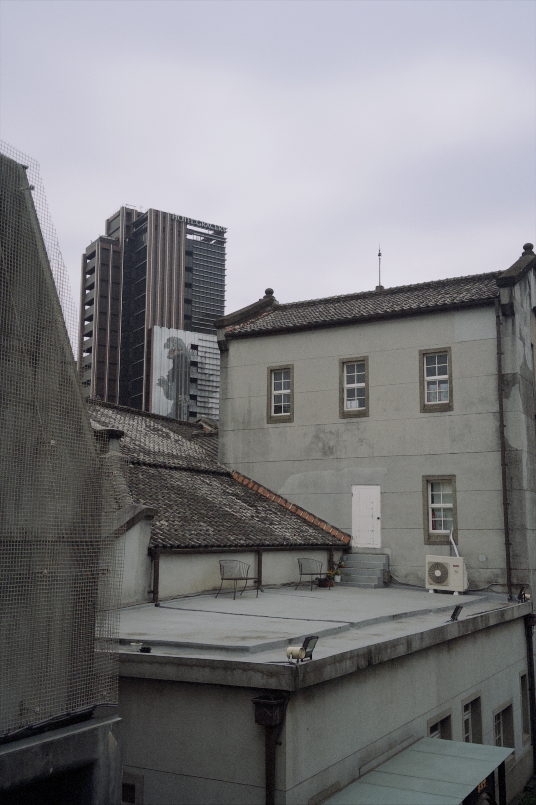
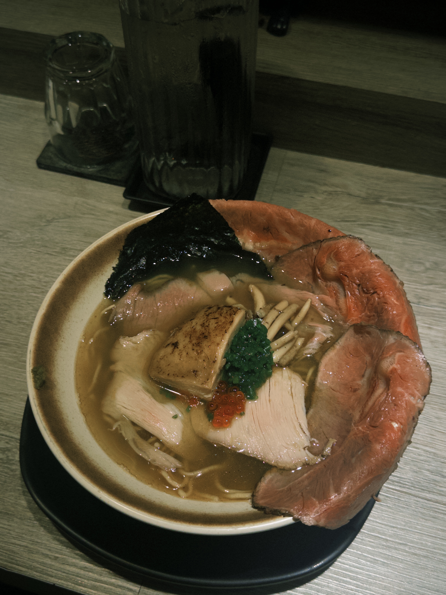
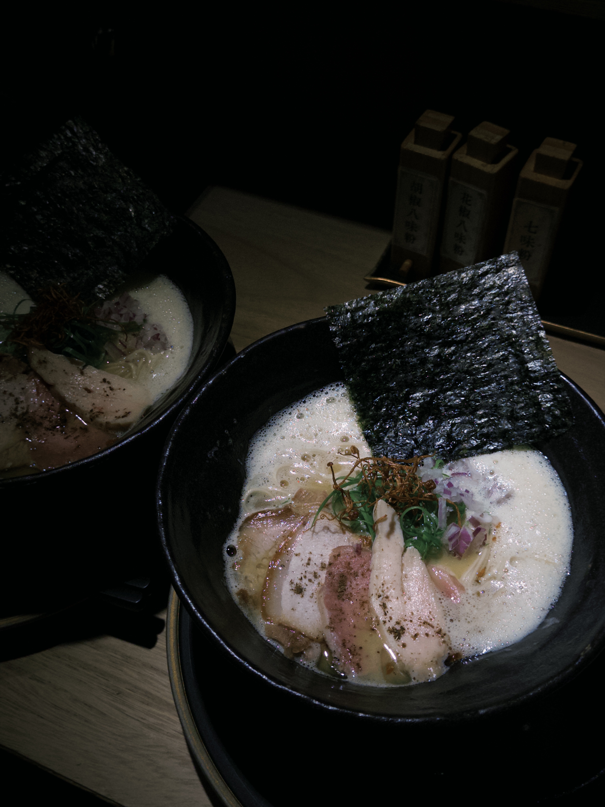
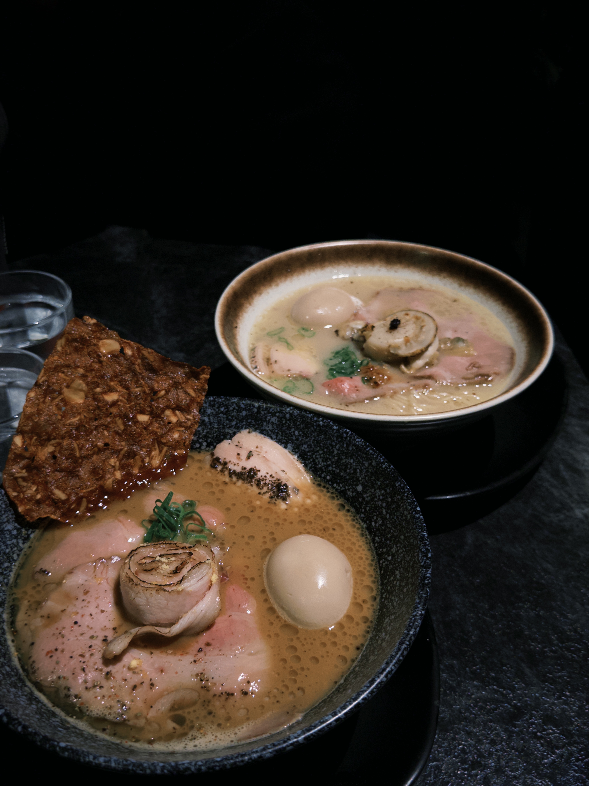

曾湘芸 Karry
世新大學新聞系大三學生 輔修資訊傳播學系
大家好，我是來自台南的新聞系大三學生。我很喜歡吃東西跟到處走走，最喜歡的食物是拉麵和甜點，也喜歡特別有生活感、有點慢步調的地方。台南不只是我的家對我來說就是一個很有溫度的城市，也多少影響我看事情的方式，會比較在意細節跟感受。
| 科目 | 喜愛程度 | 最愛單元 | 學測分數 |
|---|---|---|---|
| 國文 | 很喜歡看文言文 以前的文字形容詞彙很美 | 10 | |
| 英文 | 國中會考A++超級喜歡英文 每次考試都很有成就感 但因為是靠語感考高分單字量太少 所以高中學測沒考好 | 10 | |
| 數學 | 討厭數學但國中會考A 高中數學被當三年 後來果斷放棄 | 5 | |
| 自然 | 也超級討厭自然 尤其是理化跟化學 完全聽不懂 | 沒考 | |
| 社會 | 非常喜歡歷史 每次上課都覺得是在聽故事 現在也還是很喜歡去各國看各國的歷史遺跡 | 10 |
| 名稱 | 喜愛程度 | 上班內容 | 上班資歷 |
|---|---|---|---|
| 名人坊 | 米其林二星餐廳，一道餐點都超貴，但只要你跟廚師混熟，他們都會偷偷餵食妳 | 六個月 | |
| OB嚴選 | 在東區的服飾店，上班的姊姊們人都很好，但不招暑假不在台北的工讀生 | 三個月 | |
| 育達補習班 | 教高職生英文，通常是教英文程度跟國小沒兩樣的學生 | 一個月 | |
| 文城周杰 | 要教小朋友簡單的英文，有時候也要輔導他們跟他們聊天舒壓壓力 | 四個月 | |
| NET | 要幫忙換模特上的服裝搭配衣服， 有時候櫃檯結帳，有時候上架衣服 | 去年11月工作到現在 |
捕捉光影的瞬間

街頭人文紀實

探索大自然的細節

濃郁的豚骨拉麵

最愛的雞白湯拉麵

層次豐富的醬油拉麵